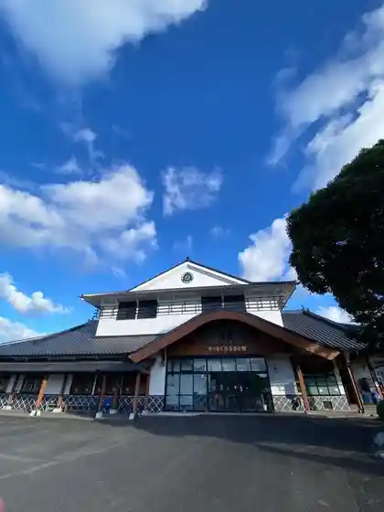
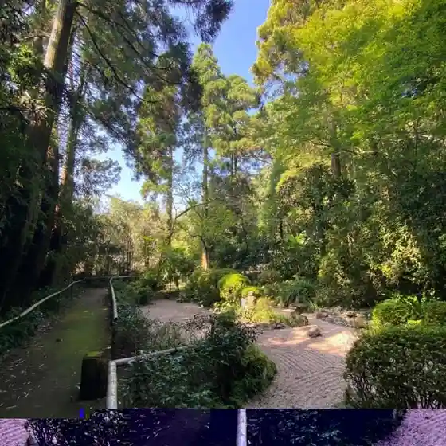
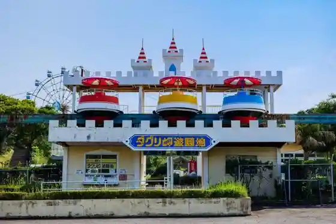

Roadside Station Matsuyama
Shibushi, Kagoshima · 099-487-3800 · Official / source link

Matsuyamajo Shi
Shibushi, Kagoshima · 099-487-2111 · Official / source link
Daguri Misaki Beach
Shibushi, Kagoshima · 099-473-1061 · Official / source link
Daiji Tera
Shibushi, Kagoshima · 099-472-2224 · Official / source link

Daguri Misaki Amusement Park
Shibushi, Kagoshima · 099-473-1061 · Official / source link

Yomogi no Sato
Shibushi, Kagoshima · 099-475-2626 · Official / source link
Jin Gaku Kokusai Forest
Shibushi, Kagoshima · 099-472-2224 · Official / source link
Shibushi Tetsudo Memorial Park
Shibushi, Kagoshima · 099-472-1111 · Official / source link
Anraku Sangu Shrine (Shibushi)
Shibushi, Kagoshima · 099-472-3437 · Official / source link
Wakashio Shuzo
Shibushi, Kagoshima · 099-472-1185 · Official / source link
Tanora Sangu Jinja Dago Festival
Shibushi, Kagoshima · 099-472-1111 · Official / source link
Ariake Kaida no Sato Park
Shibushi, Kagoshima · 099-471-4343 · Official / source link
Taishi Park
Shibushi, Kagoshima · 099-472-1111 · Official / source link
Shibushi Ohama Green Park
Shibushi, Kagoshima · 099-472-1111 · Official / source link
Kaseda Tourist Farm
Shibushi, Kagoshima · 099-487-2100 · Official / source link
Daguri Misaki Lookout
Shibushi, Kagoshima · 099-472-1478 · Official / source link
Tsushin Shireibu Hori Ato (Iwakawa Kaigun Koku Kichi)
Shibushi, Kagoshima · 099-474-1111 · Official / source link
Shi Shitei Historic Site Gongen Shima Mizugiwa Jinchi Ato
Shibushi, Kagoshima · 099-474-1111 · Official / source link
Oshikiri no Tochika
Shibushi, Kagoshima · 099-474-1111 · Official / source link
Dai 86 Shidan
Shibushi, Kagoshima · 099-474-1111 · Official / source link
Gaku Noyama
Shibushi, Kagoshima · Official / source link
Homan Jiseki
Shibushi, Kagoshima · 099-472-0724 · Official / source link
Noi Kura Kaida Kosumosurodo
Shibushi, Kagoshima · 099-472-2224 · Official / source link
Ramen Shu
Shibushi, Kagoshima · 099-475-2633 · Official / source link
Meals and Grind / Drive Inn
Shibushi, Kagoshima · 099-478-1950 · Official / source link
Atorie CAFE TARiRARi
Shibushi, Kagoshima · 0994-73-2838 · Official / source link
Unagi no Eki
Shibushi, Kagoshima · 099-478-8181 · Official / source link
Shibushi Fumoto
Shibushi, Kagoshima · 099-472-2224 · Official / source link
Tezukuri Hoji Cha Baisen Experience (Waka Sono / Horiguchi Seicha)
Shibushi, Kagoshima · 099-475-1091 · Official / source link
Shibushi Tokusanhin Hambaijo Kowan Tori
Shibushi, Kagoshima · 099-472-1616 · Official / source link
JR Shibushi Eki Shibushi Sogo Tourist Information
Shibushi, Kagoshima · 099-472-2224 · Official / source link